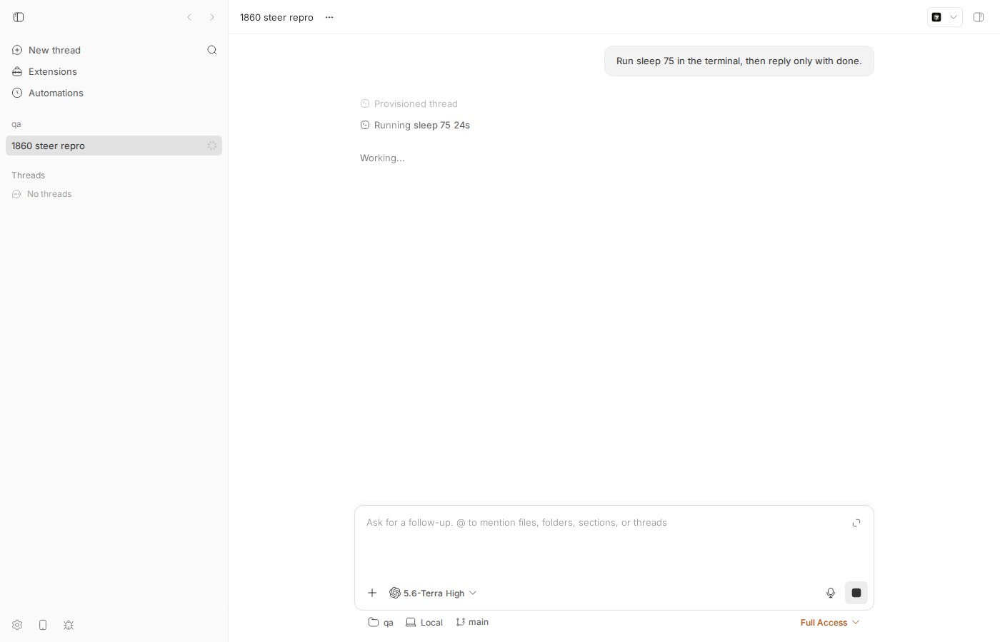
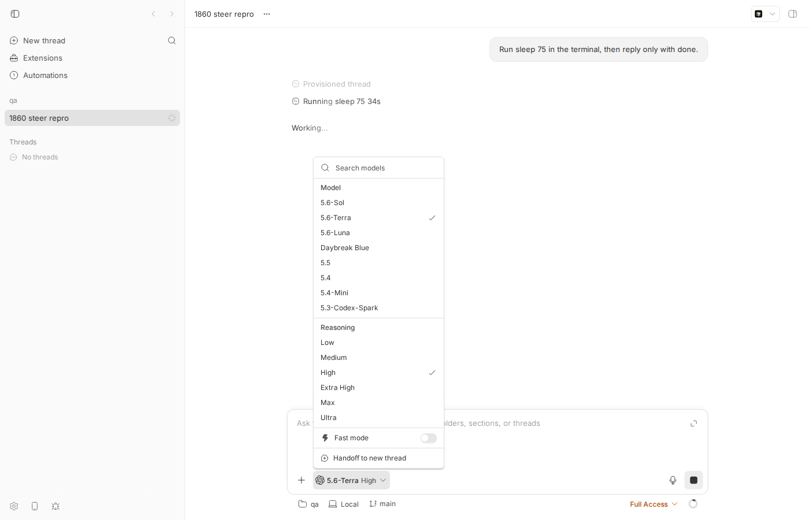
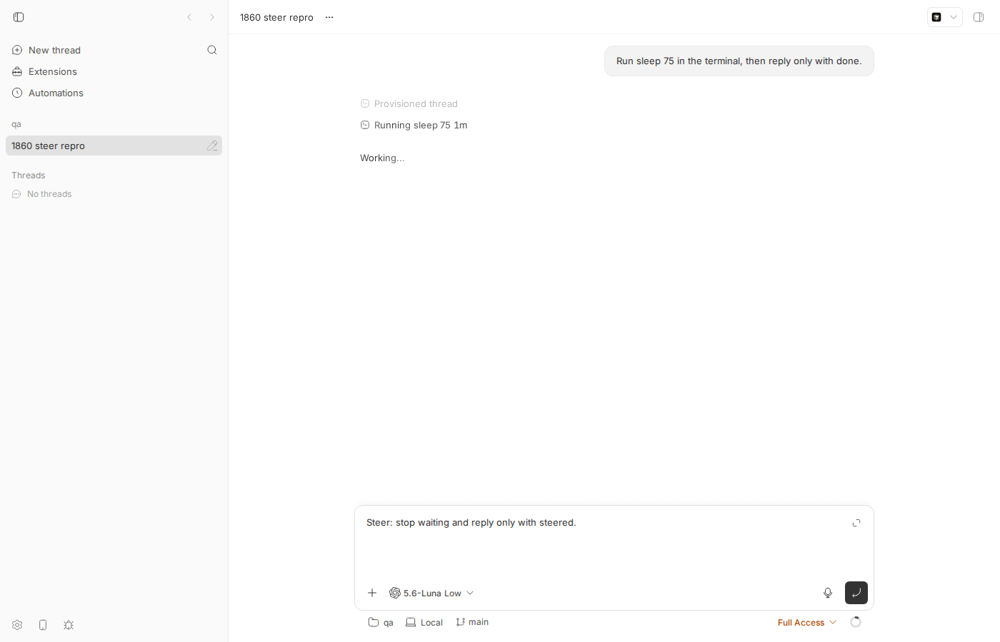
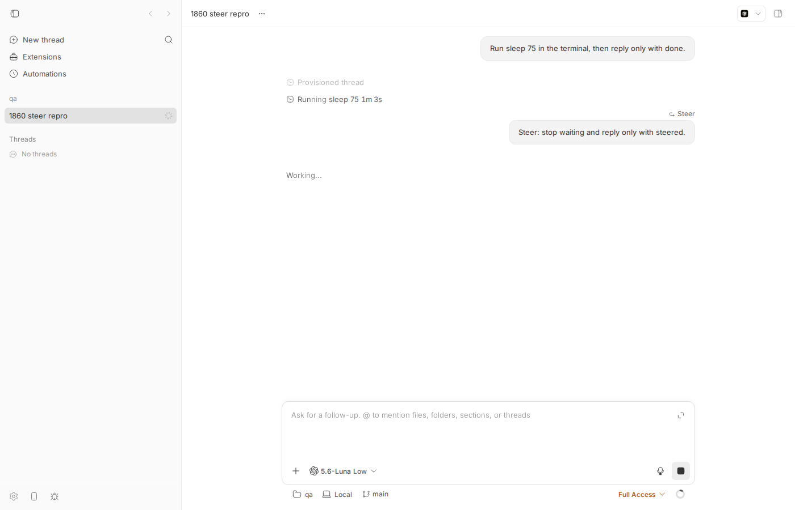
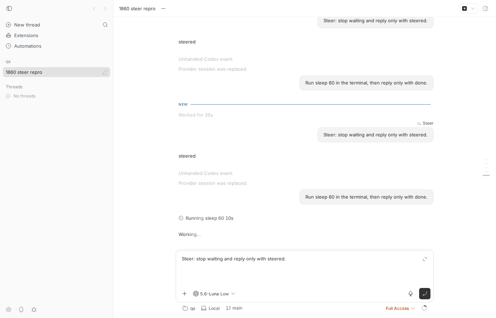

#1860 · Active steers ignore model/reasoning changes
Verdict: REPRODUCED · Root-cause confidence: high
1. TL;DR
While a Codex turn is running, the thread composer lets you change the model/reasoning picker (e.g. from 5.6-Terra · High to 5.6-Luna · Low) and then steer the running turn with Cmd+Enter. The composer keeps showing the new selection, but the steer is sent to the server as {input, mode:"steer-if-active"} with no model/reasoningLevel/permissionMode/serviceTier fields. The server then fills the missing execution fields from the thread's last execution (the active turn's tuple) and stores/dispatches the steer with gpt-5.6-terra / high. Root cause: the app's steer request builder (buildSteerFollowUpRequest in threadDetailPromptSubmission.ts) never spreads the composer's execution selection into the request, unlike the normal send and queue builders that sit right next to it. The same omission exists in the side-chat (EmbeddedThreadChat) steer path. Reproduced 3/3 times with the real app and real Codex on an isolated dev instance; a unit test at the exact code path fails on d81fee6f.
2. Claims vs findings
| Claim from the issue | Status | Evidence |
|---|---|---|
| Changing model/reasoning while a turn is active does not affect an immediate steer; composer shows new selection, steer uses the active turn's tuple. | Verified | 3 live runs: picker showed 5.6-Luna · Low (resp. Terra · Medium, Luna · Low); stored client/turn/requested for the steer carried the previous turn's tuple each time (§4, stored-turn-requests.json, run3). |
Stored steer request has target.kind = "steer" and execution = {model: previous, reasoningLevel: previous, source: "client/turn/requested"}. | Verified | Exact shape seen in the events table, e.g. {"target":{"kind":"steer","expectedTurnId":"bt97…"},"execution":{"model":"gpt-5.6-terra","permissionMode":"full","reasoningLevel":"high","serviceTier":"default","source":"client/turn/requested"}}. |
| Cmd+Enter invokes the modifier-submit handler; Enter remains normal submit (with "steer on Enter" disabled). | Verified | PromptBoxInternal.tsx#L3024-L3034 (metaKey && Enter → submitModifierPrompt), FollowUpPromptBox.tsx#L587-L596. Also works headless on Linux with Playwright Meta+Enter. |
| Normal follow-up request includes execution fields, steer request omits them. | Verified | Captured the real HTTP bodies from the app with a window.fetch hook: normal send posts model/permissionMode/reasoningLevel/serviceTier/executionInputSources; the steer posts only input + mode:"steer-if-active" (captured-http-bodies-run3.json). Code: threadDetailPromptSubmission.ts#L217-L232. |
| Not stale picker state: stored request really has the previous tuple. | Verified | See row 2. Additionally the picker selection is not lost: the next normal send (Enter on the idle thread) did carry the new tuple and Codex rebuilt the session ("Provider session was replaced. Execution settings changed"). |
| Not fixed on current main. | Verified | git diff d81fee6f origin/main -- threadDetailPromptSubmission.ts ThreadDetailPromptArea.tsx FollowUpPromptBox.tsx is empty (origin/main = a76bab06a at time of writing). |
| Reproduced 5× consecutively on macOS desktop build. | Unverified (platform) | I reproduced 3/3 on Linux web dev app; the code path is platform independent. |
| Implicit: if the tuple were sent, the steer would run with it. | Partially true | Claude Code's bridge applies model/reasoningLevel from a steer live (bridge.ts#L2409-L2414 → setModel). The Codex bridge's turn/steer passes only input to the app-server (bridge.ts#L1741-L1750); Codex cannot change model inside a running turn, so for Codex the fix can only record the selection and make it win on the next turn (see §6). |
3. Environment
- bb
d81fee6f47178c75f6ecf23d80bb69c4a3e9e5c3(issue reported against74f45e31/88abdac5; relevant files identical), web app served byscripts/bb-dev-app(Vite dev + server + host daemon), headless Chromium viadev-browser. - Linux 7.0.0-29-generic, node v24.18.0, codex-cli 0.148.0 (issue: macOS 26.5.2, Codex 0.147.0).
- Own instance: App
http://localhost:16560, Serverhttp://localhost:24560, Host daemon:32560, data dir~/.bb-dev/projects-bb-.claude-worktrees-wf_d5c47f31-487-10-83c55c78a5b4(deleted after the run). Projectproj_h6day35d2pon scratch repo/tmp/bb-1860-qa, threadthr_54ezx2a4yb.
4. Minimal reproduction
4a. Unit test at the exact code path (fails on d81fee6f)
- Save
this testasapps/app/src/views/thread-detail/threadDetailPromptSubmission.steer-execution.repro.test.tsand runcd apps/app && pnpm exec vitest run src/views/thread-detail/threadDetailPromptSubmission.steer-execution.repro.test.ts.
// Repro for get-bb/bb#1860: the Cmd+Enter steer request drops the composer's
// selected model / reasoning level, while the normal follow-up send keeps it.
import type { PromptInput } from "@bb/domain";
import { describe, expect, it } from "vitest";
import {
buildAutoFollowUpRequest,
buildFollowUpShortcutRequest,
type ThreadExecutionSelection,
} from "./threadDetailPromptSubmission";
const input: PromptInput[] = [
{ type: "text", text: "Steer: reply only with steered.", mentions: [] },
];
// The composer picker now shows "5.6-Luna · Low" while the turn started with
// "5.6-Terra · High".
const pickerSelection: ThreadExecutionSelection = {
model: "gpt-5.6-luna",
reasoningLevel: "low",
permissionMode: "full",
serviceTier: undefined,
supportsServiceTier: false,
executionInputSources: {
model: "explicit",
reasoningLevel: "explicit",
permissionMode: "explicit",
serviceTier: "explicit",
},
};
describe("#1860 steer shortcut drops the selected execution tuple", () => {
it("the regular follow-up send carries the picker selection", () => {
expect(
buildAutoFollowUpRequest({
execution: pickerSelection,
input,
threadId: "thread-1",
}),
).toMatchObject({ model: "gpt-5.6-luna", reasoningLevel: "low" });
});
it("the Cmd+Enter steer send carries the same picker selection (FAILS on main)", () => {
const shortcut = buildFollowUpShortcutRequest({
input,
queuedMessages: [],
threadId: "thread-1",
// On main the builder does not even accept an execution selection.
...({ execution: pickerSelection } as object),
});
expect(shortcut?.kind).toBe("draft");
// Expected: model/reasoningLevel present. Actual on d81fee6f: the request
// is {id, input, mode:"steer-if-active"} and the server falls back to the
// active turn's last execution tuple (gpt-5.6-terra / high).
expect(shortcut?.request).toMatchObject({
mode: "steer-if-active",
model: "gpt-5.6-luna",
reasoningLevel: "low",
});
});
});
Output (full):
❯ src/views/thread-detail/threadDetailPromptSubmission.steer-execution.repro.test.ts (2 tests | 1 failed) 9ms
× the Cmd+Enter steer send carries the same picker selection (FAILS on main) 6ms
AssertionError: expected { id: 'thread-1', …(2) } to match object { mode: 'steer-if-active', …(2) }
- Expected
+ Received
{
"mode": "steer-if-active",
- "model": "gpt-5.6-luna",
- "reasoningLevel": "low",
}
Test Files 1 failed (1)
Tests 1 failed | 1 passed (2)
4b. Live end-to-end repro (real app + real Codex)
- Start an isolated dev instance and create a project on a scratch repo:
scripts/bb-dev-app current # prints App/Server/Host daemon URLs + data dir mkdir -p /tmp/bb-1860-qa && cd /tmp/bb-1860-qa && git init -q && echo hi > README.md && git add -A && git commit -qm init curl -s -X POST http://localhost:24560/api/v1/projects -H 'content-type: application/json' \ -d '{"name":"qa","source":{"type":"local_path","path":"/tmp/bb-1860-qa","hostId":"host_6ct2yee6jc"}}' # → {"id":"proj_h6day35d2p",...} - Start a Codex thread with 5.6-Terra · High and a long-running command (CLI is equivalent to the UI's first send):
BB_SERVER_URL=http://localhost:24560 node packages/scripts/dist/commands/run-cli.js thread spawn \ --project proj_h6day35d2p --provider codex --model gpt-5.6-terra --reasoning-level high \ --permission-mode full --title "1860 steer repro" \ --prompt "Run sleep 75 in the terminal, then reply only with done." --json # → {"id":"thr_54ezx2a4yb", ...} - Open
http://localhost:16560/projects/proj_h6day35d2p/threads/thr_54ezx2a4ybwhilesleep 75is running. The composer picker shows 5.6-Terra · High. - Click the picker, choose 5.6-Luna, then Low (browser scripts:
03,04). Picker now reads 5.6-Luna · Low. - Type
Steer: stop waiting and reply only with steered.and press Cmd+Enter (05). The message shows up in the timeline tagged "Steer"; the picker still reads 5.6-Luna · Low. - Inspect what was stored:
sqlite3 <data-dir>/bb.db "select data from events where thread_id='thr_54ezx2a4yb' and type='client/turn/requested' order by sequence"
Expected: the steer request'sexecutionisgpt-5.6-luna / low(or the UI refuses / explains).
Actual (trimmed,full):{ "requestId": "creq_ur7efbvys8", "input": "Run sleep 75 in the terminal, then reply only with done.", "target": {"kind": "thread-start"}, "execution": {"model": "gpt-5.6-terra", "permissionMode": "full", "reasoningLevel": "high", "serviceTier": "default", "source": "client/turn/requested"} } { "requestId": "creq_xbt9sxz5ex", "input": "Steer: stop waiting and reply only with steered.", "target": {"kind": "steer", "expectedTurnId": "bt9706fa04-1-01a01aa3-de1e-7090-9e14-02a145b9f131"}, "execution": {"model": "gpt-5.6-terra", "permissionMode": "full", "reasoningLevel": "high", "serviceTier": "default", "source": "client/turn/requested"} }The event log confirms the steer joined the active turn (seq 20client/turn/requestedat 15:30:06,turn/completedseq 32 at 15:30:09, thesleep 75item completes at 15:30:20). - (Run 3, same thread) Hook
window.fetchin the page, sendRun sleep 60 …with Enter on the idle thread (picker Terra · Medium), switch picker to Luna · Low during the turn, Cmd+Enter a steer (08). Captured bodies (json):POST /api/v1/threads/thr_54ezx2a4yb/send ← Enter (normal send) {"input":[…"Run sleep 60 in the terminal, then reply only with done."…],"mode":"queue-if-active", "model":"gpt-5.6-terra","permissionMode":"full","reasoningLevel":"medium","serviceTier":"default", "executionInputSources":{"model":"explicit","serviceTier":"explicit","reasoningLevel":"explicit","permissionMode":"explicit"}} POST /api/v1/threads/thr_54ezx2a4yb/send ← Cmd+Enter (steer), picker = 5.6-Luna · Low {"input":[…"Steer: stop waiting and reply only with steered."…],"mode":"steer-if-active"}Stored result for that steer:execution = gpt-5.6-terra / medium(run3) — i.e. whatever the active turn was started with, never the picker.

Running sleep 75), picker reads 5.6-Terra · High.



Repro files: 1860/repro/
5. Root cause
Client builds the steer request without the execution selection. In threadDetailPromptSubmission.ts#L202-L232 the three follow-up request builders live side by side. buildAutoFollowUpRequest and buildCreateQueuedFollowUpRequest take an execution argument and spread buildSharedThreadExecutionRequestFields(execution) (model, serviceTier, reasoningLevel, permissionMode, executionInputSources). buildSteerFollowUpRequest does not:
function buildSteerFollowUpRequest({ input, threadId }: BaseFollowUpRequestArgs) {
if (input.length === 0) return null;
return { id: threadId, input, mode: "steer-if-active" }; // ← no execution fields
}
buildFollowUpShortcutRequest (#L261-L285) has no execution parameter either, and its caller handleModifierSubmit in ThreadDetailPromptArea.tsx#L820-L843 passes only input / queuedMessages / threadId, even though followUpExecutionSelection (#L738-L759) is available in the same component and is used by handleSend. This has been the shape since the steer shortcut was introduced (commit 27e9ffcd2 "rename follow-up shortcut submit handling"); the existing unit test even asserts the request is exactly {id,input,mode}.
Server fills the gap from the last execution. sendThreadMessage resolves steer-if-active on an active thread to steer (thread-send.ts#L174-L215) and calls buildExecutionOptions(deps, payload, …, "client/turn/requested") (#L466-L473). With payload.model undefined, resolveExistingThreadExecutionPlan picks thread.modelOverride ?? lastExecution.model ?? projectExecution.model (thread-execution-plan.ts#L334-L339) and the same for reasoning — that is the active turn's tuple. This resolved tuple is what gets persisted in client/turn/requested.execution and sent to the daemon as turn.submit options. The server behaviour is by design (omitted = "keep"); the defect is that the client omits fields it intends to set.
Only this client path is execution-less. The queued-card "Send now" path carries the queued message's stored tuple (queued-messages.ts#L129-L143), and bb thread tell --mode steer --model … sends the flags (actions.ts#L531-L546). The daemon/runtime also forwards options on steer: runtime.steerTurn normalizes execOpts, calls reconfigureThreadIfNeeded, and puts them on the turn/steer adapter command (runtime.ts#L2060-L2120). So the whole pipeline below the composer is ready to carry the tuple; the app just never puts it in.
Second instance of the same bug: the side-chat composer's modifier submit in EmbeddedThreadChat.tsx#L710-L714 posts {id, input, mode:"steer-if-active"} while its executionRequestFields (#L432-L450) are spread into its normal send/queue requests a few lines later.
Deeper issue — provider asymmetry. Even with the tuple sent, what a steer can change is provider-specific: Claude Code's bridge calls setModel/applyMutableSettings on steer (bridge.ts#L622-L652), so the selection genuinely applies; the Codex bridge's turn/steer sends only input (bridge.ts#L1741-L1750) because Codex app-server's steer joins the running turn and model/reasoning are fixed at turn/start. The recorded tuple will therefore be correct for Claude but aspirational for Codex (it takes effect on the next turn/start, where a reasoning change already rebuilds the session — observed as "Provider session was replaced. Execution settings changed"). The issue's second "expected" option (read-only controls with an explanation) is the honest UX for Codex.
6. Proposed fix (first principles)
- apps/app/src/views/thread-detail/threadDetailPromptSubmission.ts: give
buildSteerFollowUpRequestandbuildFollowUpShortcutRequestanexecution: FollowUpExecutionSelectionargument and return{ id, input, mode: "steer-if-active", ...buildSharedThreadExecutionRequestFields(execution) }. Update the existing test that asserts the execution-less shape and add the repro test above (now passing). - apps/app/src/views/thread-detail/ThreadDetailPromptArea.tsx
handleModifierSubmit: passexecution: followUpExecutionSelection(add it to theuseCallbackdeps). - apps/app/src/components/thread/embedded-chat/EmbeddedThreadChat.tsx
handleModifierSubmit: spread...executionRequestFieldsinto the steer mutation, as the normal send does. - No server, daemon, or wire changes:
SendMessageRequestalready accepts these fields for every mode, so noHOST_DAEMON_PROTOCOL_VERSIONbump.
What could go wrong / follow-ups: (a) For Codex, the steer will be recorded with the new tuple but the running turn keeps the old model; the next turn then applies it (session rebuild on reasoning change). If that is considered misleading, the product-level alternative is to disable/annotate the model and reasoning controls while steering a Codex thread (a provider capability flag — the server owns that policy). (b) reconfigureThreadIfNeeded runs on steer; the bridge-protocol adapter classifies every change as "live" so it will not replace the session mid-turn — verified in bridge-protocol-adapter.ts#L239. (c) Permission-mode changes mid-turn ride the same path and are applied by the Claude bridge as permission escalation; the steer would now also carry permissionMode — this matches the normal send and is guarded by clampPermissionModeToHost on the server.
7. PR review
No open PRs are linked to this issue.
8. Related issues
- #1864 — Allow changing the model when editing a queued message (same composer/execution-tuple area; the queue path does store the tuple, the steer path loses it).
- #1236 — Apply Claude turn settings without replacing live sessions (the reason a steer's model/reasoning actually takes effect for Claude Code).
- #1585 — Keyboard control for running threads (steer/queue ergonomics).
9. Appendix
Event timeline for run 1 (thread thr_54ezx2a4yb, relevant rows)
1 client/turn/requested 15:29:00 target thread-start, execution terra/high
14 item/started 15:29:05 commandExecution "/bin/bash -lc 'sleep 75'"
20 client/turn/requested 15:30:06 "Steer: stop waiting…" target {kind:"steer", expectedTurnId:"bt9706fa04-1-…"} execution terra/high
21 turn/input/accepted 15:30:06 clientRequestId creq_xbt9sxz5ex
28 item/completed 15:30:09 agentMessage "steered"
32 turn/completed 15:30:09
33 item/completed 15:30:20 sleep 75 exitCode 0 durationMs 74853
Run 2 (Luna/Low turn, picker switched to Terra/Medium, steer stored as Luna/Low)
creq_5wdnt23fqp "Run sleep 60…" target new-turn execution {model:"gpt-5.6-luna", reasoningLevel:"low"}
creq_g3dbvuqp7r "Steer: …" target steer execution {model:"gpt-5.6-luna", reasoningLevel:"low"} ← picker said Terra · Medium
Commands run
git checkout d81fee6f47178c75f6ecf23d80bb69c4a3e9e5c3
pnpm install --frozen-lockfile --prefer-offline && pnpm exec turbo run build
cd apps/app && pnpm exec vitest run src/views/thread-detail/threadDetailPromptSubmission.steer-execution.repro.test.ts
scripts/bb-dev-app current
curl -s -X POST http://localhost:24560/api/v1/projects … (see §4b)
node packages/scripts/dist/commands/run-cli.js thread spawn … (see §4b)
dev-browser --browser bb1860 --headless run 1860/repro/browser-0{1,2,3,4,5,8}*.js
sqlite3 ~/.bb-dev/…/bb.db "select data from events where thread_id='thr_54ezx2a4yb' and type='client/turn/requested'"
git diff d81fee6f origin/main -- apps/app/src/views/thread-detail/threadDetailPromptSubmission.ts apps/app/src/views/thread-detail/ThreadDetailPromptArea.tsx apps/app/src/components/promptbox/FollowUpPromptBox.tsx # empty
pnpm dev:stop
Note: the dev-browser sandbox cannot read request.postData() (Buffer encoding limitation), which is why run 3 hooks window.fetch inside the page instead.